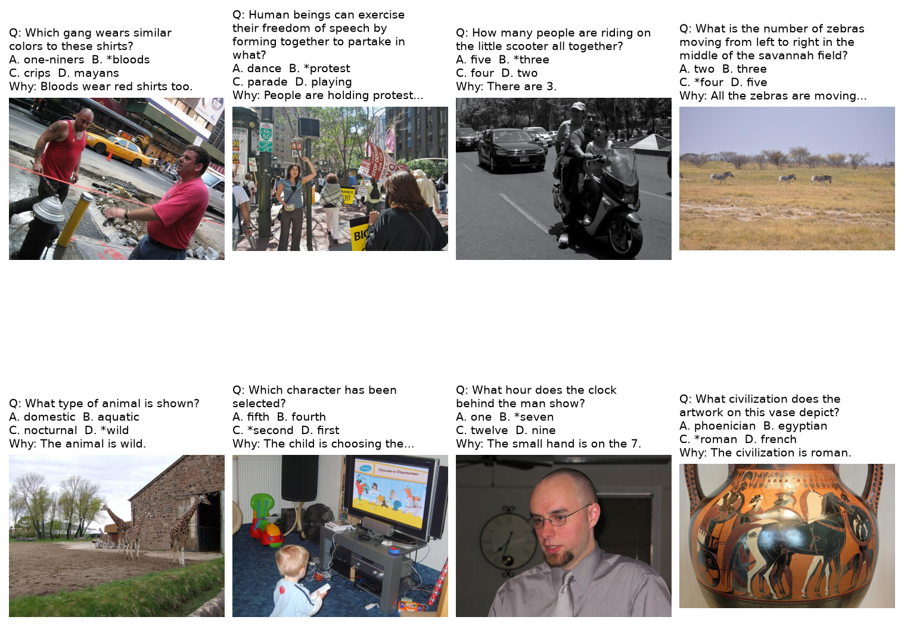
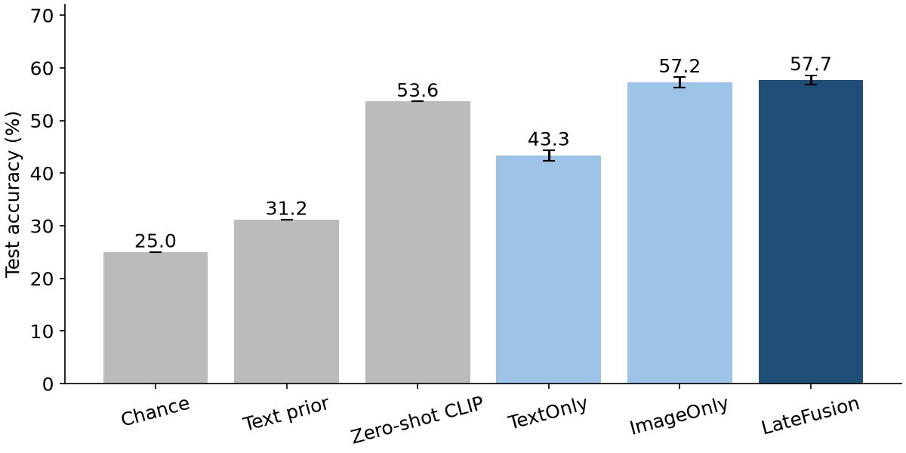

M2 Draft PDF report
Professional report - 6 pages
Preview PDF
Source: Assignment3/ (features.py, models.py, train.py, 02_results.ipynb).
Task and data (summary of M1)
Task: multiple-choice visual question answering on A-OKVQA [1]. One sample is a COCO image [2], a question that needs commonsense or world knowledge, and 4 choices; the model picks one choice. Details of the data and the EDA are in the M1 proposal and Assignment3/01_eda.ipynb.
| Item | Value |
|---|---|
| Dataset | HuggingFaceM4/A-OKVQA, revision d1b0efa; annotations Apache 2.0, COCO images |
| Labelled pairs | 18,201 questions on 17,661 images (official test split has no labels) |
| Split (by image) | train 15,346 / validation 1,710 / test 1,145 (= official validation); seed 42 |
| Modalities | image (modality B) and question + choices (modality A) |
| Missing modality | none (0 missing images or questions) |
| Proposal status | submitted; no formal decision returned yet, the group continued after checking the handbook rules |

Methods of the draft
All models share one frozen encoder, CLIP ViT-B/32 [3]. Its outputs are computed once (Assignment3/features.py, 99 s for all images and 72 s for all texts on one A40) and cached: an image vector v, a question vector q and a vector cj for each choice, all 512-d and scaled to length 1. A small MLP (Linear → ReLU → Dropout 0.1 → Linear to 1 score) scores each choice; a softmax over the 4 scores and cross-entropy give the loss.
| Model | Input of the MLP for choice j | Trainable |
|---|---|---|
| TextOnly (modality A) | [q; cj; q⊙ cj] | 787,457 |
| ImageOnly (modality B) | [v; cj; v⊙ cj] (choices name the answers; no question) | 787,457 |
| LateFusion (simple fusion) | [v; q; cj; v⊙ cj; q⊙ cj] | 1,311,745 |
Training: Adam, learning rate 10-3, batch 64, 20 epochs, checkpoint with the best validation accuracy, seeds 42–46, settings in configs/a3.yaml. The test split is used once per run. Metrics: multiple-choice accuracy (main) and the A-OKVQA direct-answer (DA) score of the chosen text, min(n/3, 1) with n the number of workers who gave it.
Preliminary results
| Model | Val. accuracy | Test accuracy | Test DA score | Test, shuffled images |
|---|---|---|---|---|
| Chance | 0.250 | |||
| Answer-text prior | 0.312 | 0.281 | ||
| Zero-shot CLIP | 0.536 | 0.438 | ||
| TextOnly | 0.475 ± 0.003 | 0.433 ± 0.010 | 0.362 ± 0.008 | 0.433 |
| ImageOnly | 0.579 ± 0.005 | 0.572 ± 0.010 | 0.463 ± 0.009 | 0.322 |
| LateFusion | 0.587 ± 0.008 | 0.577 ± 0.009 | 0.470 ± 0.008 | 0.343 |

- The image is the strong modality. ImageOnly (57.2%) is far above TextOnly (43.3%); LateFusion is 14.4 points above TextOnly in all 5 seeds.
- The question adds little on top of the image. LateFusion is only 0.5 points above ImageOnly, less than the seed SD. With CLIP features, matching the image with the 4 choices already answers most questions.
- The models use the image. With shuffled images, accuracy falls by 23–25 points, below the text-only model.
- Training helps a little over zero-shot. Zero-shot CLIP already gets 53.6%; the trained late fusion adds about 4 points.

Support cases ask about something clearly visible; conflict cases contain a plausible wrong answer in the image (left vs right, two foods on one plate).
Status and next steps
- Done: data pipeline and split, feature cache, unimodal A, unimodal B and simple fusion with 5 seeds, shuffle test, support / conflict examples.
- For M3: the improved fusion (cross-attention from the choice tokens to the 50 image tokens), ablations (fusion level, product terms, fine-tuning the last CLIP block), error analysis by question type, compute cost, final report, slides and video.
AI Usage Disclosure
Claude Code (Claude Opus 5.5), used by Võ Thị Như Quỳnh on 9 November 2026, wrote the feature cache, the models and the training script, ran the experiments and drafted this report. Every number comes from saved run outputs read by Assignment3/02_results.ipynb; details are in AI_USAGE.md.
References
- D. Schwenk, A. Khandelwal, C. Clark, K. Marino and R. Mottaghi, “A-OKVQA: A benchmark for visual question answering using world knowledge,” in Proc. ECCV, pp. 146–162, 2022. Dataset: https://huggingface.co/datasets/HuggingFaceM4/A-OKVQA, revision
d1b0efa. - T.-Y. Lin et al., “Microsoft COCO: Common objects in context,” in Proc. ECCV, pp. 740–755, 2014.
- A. Radford et al., “Learning transferable visual models from natural language supervision,” in Proc. ICML, PMLR 139, pp. 8748–8763, 2021.
- A. Vaswani et al., “Attention is all you need,” in Advances in Neural Information Processing Systems 30, pp. 5998–6008, 2017.
- D. P. Kingma and J. Ba, “Adam: A method for stochastic optimization,” in Proc. ICLR, 2015.